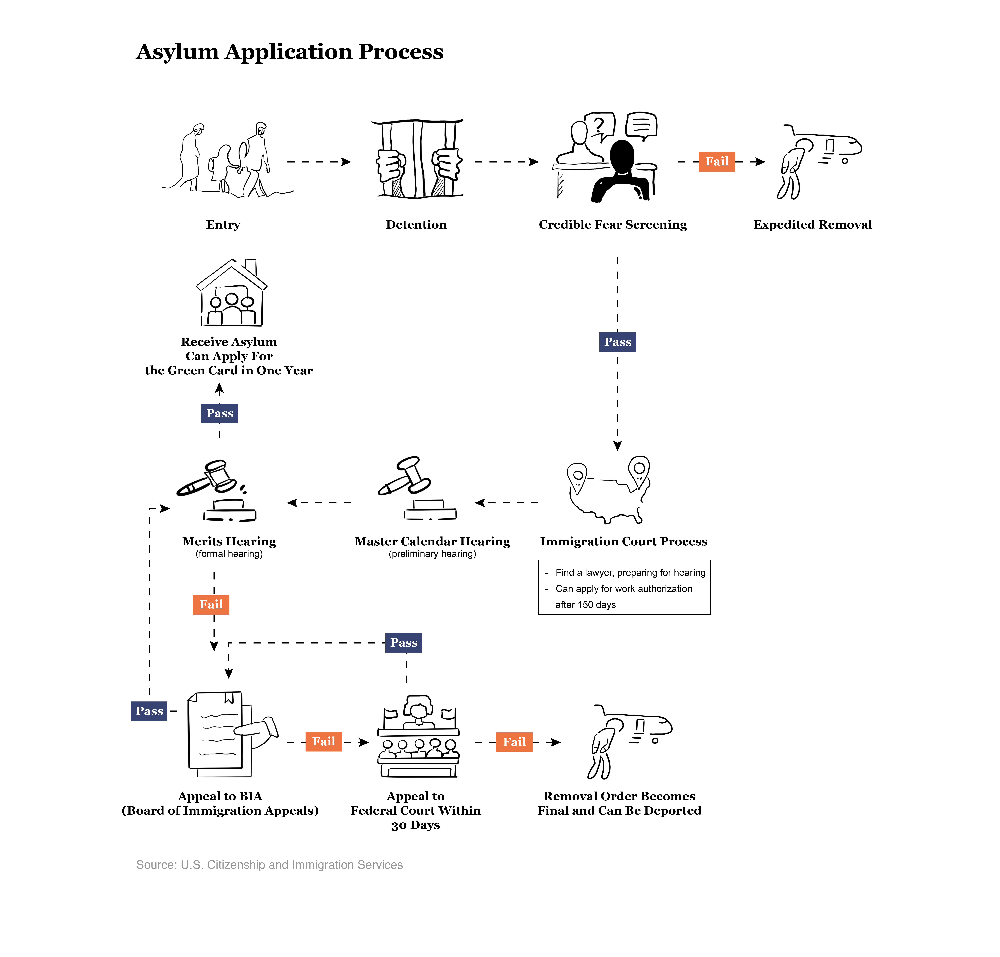

            <div class="immigration-part">
              <div class="text-image-layout">
                <div class="text-content">
                  <p>
                    Some tried to schedule asylum appointments through the U.S. Customs and Border
                    Protection mobile app, CBP One. But the app had no Chinese-language interface and
                    its opaque scheduling system left many confused and frustrated. For some, waiting
                    wasn't an option. They chose instead to scale the border wall at night and apply for
                    asylum afterward.
                  </p>

                  <p>
                    Once they reached the U.S., migrants were immediately detained by immigration
                    authorities — some held for a single day, others for weeks or even months.
                  </p>

                  <p>
                    Their asylum cases can take years to process, and during that time, they are not
                    permitted to leave the country.
                  </p>
                </div>
                <div class="image-content">
                  <h3>Asylum Application Process</h3>
                  
                </div>
              </div>
            </div>
